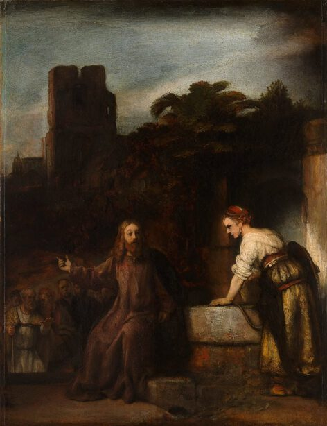

Rembrandt,1606 - 1669,Baroque,Dutch,"Rembrandt Harmenszoon van Rijn (; Dutch: [ˈrɛmbrɑnt ˈɦɑrmə(n)soːn vɑn ˈrɛin] (listen); July 15, 1606 – October 4, 1669) was a Dutch draughtsman, painter and printmaker. An innovative and prolific master in three media, he is generally considered one of the greatest visual artists in the history of art and the most important in Dutch art history. Unlike most Dutch masters of the 17th century, Rembrandt's works depict a wide range of style and subject matter, from portraits and self-portraits to landscapes, genre scenes, allegorical and historical scenes, biblical and mythological themes as well as animal studies. His contributions to art came in a period of great wealth and cultural achievement that historians call the Dutch Golden Age, when Dutch art (especially Dutch painting), although in many ways antithetical to the Baroque style that dominated Europe, was extremely prolific and innovative, and gave rise to important new genres. Like many artists of the Dutch Golden Age, such as Jan Vermeer of Delft, Rembrandt was also an avid art collector and dealer.",http://en.wikipedia.org/wiki/Rembrandt,262
